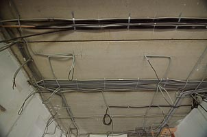

Проект системы электроснабжения
Электроснабжение – это система, обеспечивающая распределение электроэнергии внутри загородного дома. От её надежной работы зависит функционирование других инженерных систем (например, ОВК), а также безопасность людей.
Качественная система электроснабжения должна удовлетворять таким требованиям:
- Бесперебойность
- эффективное использование электроэнергии
- соответствие параметров электроэнергии принятым стандартам
- пожаробезопасность и безопасность для потребителей
- безопасность обслуживания системы
Требования к системам электроснабжения подробно описаны в соответствующих документах, таких как: СНиПы, ГОСТ, ПУЭ, руководства Госгортехнадзора, технические циркуляры, своды правил и т.д. Разработать качественный проект электроснабжения в полном соответствии со всеми требованиями и нормами может только профессиональный инженер-проектировщик.
Проектирование электроснабжения загородного дома лучше всего начинать на этапе строительства. Проект разрабатывается с учетом требований других инженерных систем дома, таких как: отопление, водоснабжение, канализация и т.д. Комплексный подход к проектированию позволяет получить наилучшую увязанность систем, что гарантирует надёжность работы и простоту монтажа
Если у вас есть вопросы касательно проектирования инженерных систем вашего дома (в том числе системы электроснабжения), вы можете позвонить нам по телефону +7 (495) 99-88-347 или отправить вопрос на hello@otdelkalux.ru, указав в письме телефон для связи с Вами.
Инженерные системы дома, такие как электричество, отопление, вода и канализация тесно взаимосвязаны, поэтому лучше всего отдать их разработку одному подрядчику, чтобы они были увязаны друг с другом наилучшим образом!

Порядок проектирования систем электроснабжения
-
Сбор сведений
В зависимости от размеров здания и сложности требований, для выполнения проекта специалисту могут потребоваться следующие документы:
- техническое задание
- дизайн-проект
- поэтажные планы
- условия на подключение
-
Составление технического задания
В ТЗ учитываются пожелания заказчика относительно размещения электроточек, а также некоторые технические данные, такие как, мощность электропотребителей. Техническое задание разрабатывается и согласовывается совместно с заказчиком.
-
Согласование проекта электроснабжения
В результате разработки проекта вы получите пакет документов, подходящий для согласования в службе эксплуатации здания или Ростехнадзоре. В состав проекта входят:
- пояснительная записка
- план распределительных силовых сетей и группового освещения
- системы уравнивания потенциалов
- однолинейные расчетные схемы щитов
- характеристики материалов и приборов
- рабочие сметы, акты распределения эксплуатационной ответственности и балансовой принадлежности
- список оборудования и материалов
Рекомендации по выбору подрядчика
- Лучше отдать предпочтение тем, кто оказывает услуги и проектирования и монтажа. Так вы избежите ситуации, когда монтажники говорят, что по проекту собрать невозможно, а проектанты говорят – «А мы бы собрали!»
- Заключать договор с организацией, которая занимается поставками оборудования, проектированием и монтажом – не самый оптимальный вариант. Система скорее всего будет хорошая, но в плане «избыточности» часто возникают проблемы, т.к. если фирма продаёт оборудование, то в проекте будут скорее всего самые новые и «навороченные» модели. Даже если стоимость самого оборудования и монтажа кажется адекватной, очень часто можно обойтись более простыми и проверенными временем решениями за меньшие деньги и без какой-либо потери в качестве или эффективности.
- Если проектанту для выполнения работ нужна только документация, а организовать встречу на объекте он сам не предлагает – не стоит с ним работать! Это на 100% означает, что он не заинтересован в качестве проекта. В реальности объект всегда имеет расхождения с документацией, поэтому при таком подходе хороший проект вам точно не сделают.
Обсудим детали?